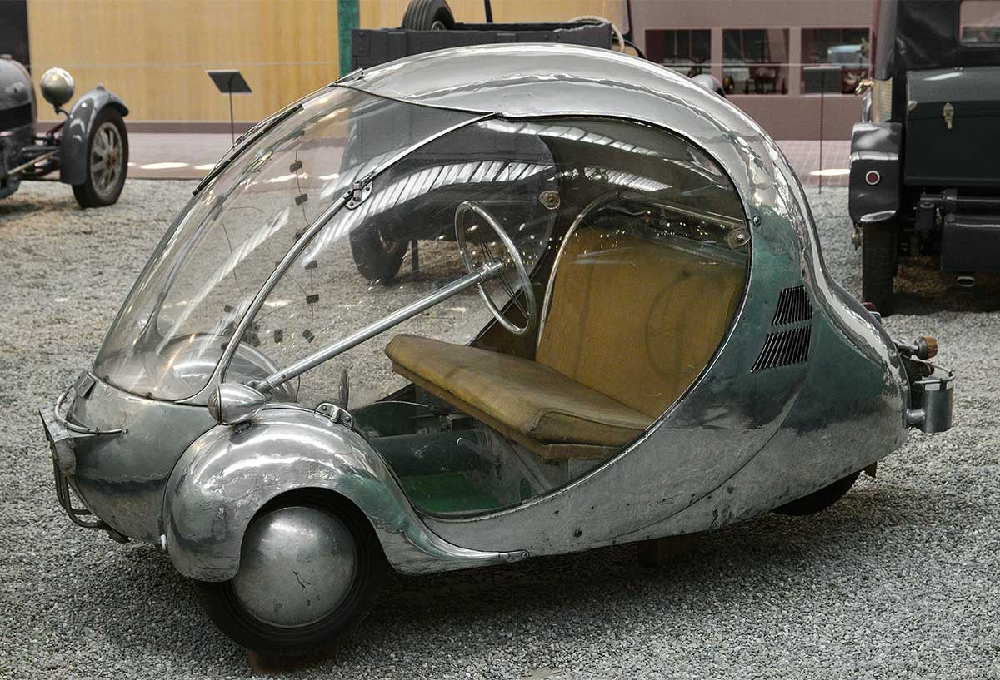

En tuhaf arabalar arasında yer alan Peel P50, 1962’den 1965’e kadar Man Adası’ndaki Peel Engineering Company tarafından üretildi. Bir kişi ve bir alışveriş çantası için yeterli alana sahip olduğunu anlatan reklam sloganları ile bir şehir arabası olarak tasarlandı. Araba o kadar küçük ki, normal kapılardan geçebiliyor, binalara girebiliyor ve tek bir kişi tarafından oldukça kolay bir şekilde kaldırılabiliyor. 1960’larda yaklaşık 45 tane Peel P50 satıldı. 2011 yılında bu araba yeniden üretilmeye başlandı, ancak her yıl yaklaşık 10-15 tane satılıyor.
| Anasayfa | 1 | 2 | 3 | 4 | 5 | 6 | 7 | 8 | 9 | 10 | 11 | 12 | 13 | 14 | 15 | 16 | 17 | 18 | 19 | 20 |